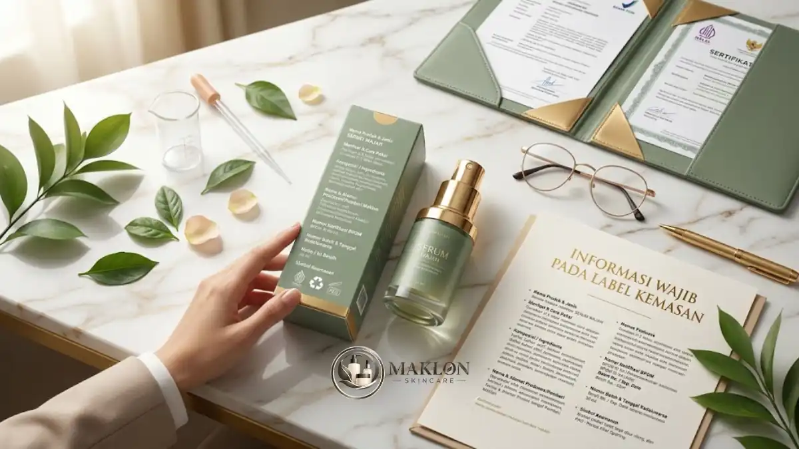

Syarat BPOM skincare mencakup notifikasi kosmetika sebelum produk beredar, produksi di fasilitas yang menerapkan CPKB, bahan yang diizinkan, label yang sesuai, dan sertifikat halal.
- Skincare di Indonesia wajib melalui notifikasi kosmetika ke BPOM sebelum diedarkan secara komersial.
- Produk harus diproduksi di fasilitas yang menerapkan Cara Pembuatan Kosmetika yang Baik (CPKB).
- Bahan terlarang seperti merkuri, hidrokuinon, dan asam retinoat tidak boleh ada dalam formula kosmetik.
- Label wajib memuat informasi tertentu, termasuk daftar komposisi lengkap dan nomor notifikasi resmi.
- Sejak 17 Oktober 2026, produk kosmetik wajib bersertifikat halal resmi berdasarkan mandat regulasi pemerintah.
Apa Itu Notifikasi BPOM untuk Skincare?
Notifikasi BPOM adalah pemberitahuan resmi kepada Badan Pengawas Obat dan Makanan bahwa sebuah produk kosmetik, termasuk skincare, memenuhi persyaratan keamanan, mutu, dan label sebelum diedarkan.
Skincare termasuk kategori kosmetika, sehingga diatur melalui sistem notifikasi, bukan izin edar seperti obat-obatan medis.
Produk yang telah selesai dinotifikasi akan memperoleh nomor notifikasi resmi yang wajib dicantumkan pada setiap kemasan produk yang beredar.
Nomor notifikasi tersebut umumnya berlaku untuk jangka waktu tertentu dan perlu diperpanjang secara berkala sesuai ketentuan hukum yang berlaku.
Penting dipahami batasannya. Produk dengan klaim pengobatan, misalnya menyembuhkan penyakit kulit tertentu, dapat tergolong obat dan tunduk pada aturan yang jauh berbeda.
Karena itu, klaim manfaat produk perlu dirumuskan secara hati-hati dan dikonsultasikan dengan ahli regulasi. Pelaku usaha dapat melihat gambaran besar alur produksi di panduan maklon skincare.
Apa Saja Syarat BPOM untuk Skincare?
Syarat BPOM untuk skincare meliputi pelaku usaha yang sah, produksi di fasilitas CPKB, bahan yang diizinkan, formula yang terdokumentasi, serta label dan klaim yang sesuai ketentuan.
Berikut lima syarat pokok yang wajib dipenuhi oleh setiap pemilik merek:
- Legalitas usaha: Pelaku usaha memiliki identitas hukum dan perizinan berusaha yang sah, seperti Nomor Induk Berusaha (NIB) berbasis risiko.
- Produsen yang memenuhi CPKB: Produk dibuat oleh industri kosmetik yang menerapkan standar CPKB. Pada skema maklon, brand bermitra dengan pabrik bersertifikat CPKB dan memiliki perjanjian kontrak kerja sama tertulis.
- Bahan yang diizinkan: Formulasi hanya memakai bahan baku yang diperbolehkan dalam regulasi kosmetika dan mematuhi batas konsentrasi aman.
- Dokumen produk (DIP): Data formula lengkap, spesifikasi bahan baku, data produsen, dan bukti keamanan disimpan rapi sebagai bagian dari Dokumen Informasi Produk.
- Label yang sesuai: Kemasan wajib memuat informasi wajib secara jujur serta klaim kosmetik yang tidak menyesatkan konsumen.
Persyaratan teknis dapat mengalami pembaruan berkala. Rujuk selalu pedoman resmi dari situs BPOM RI untuk memastikan ketentuan paling mutakhir.
Bagaimana Langkah Mengurus Notifikasi Kosmetika BPOM?
Langkah mengurus notifikasi kosmetika meliputi menyiapkan legalitas dan formula, memastikan produsen memenuhi CPKB, menyusun label, mengajukan notifikasi secara daring, lalu memantau hasilnya hingga nomor notifikasi terbit.
Berikut urutan praktis pengurusan notifikasi BPOM yang lazim ditempuh:
- Siapkan identitas dan dokumen perizinan berusaha pemilik brand secara lengkap.
- Pastikan pabrik maklon mitra menerapkan CPKB aktif dan siapkan surat perjanjian kerja sama produksi.
- Finalkan komposisi formula dan pastikan seluruh bahan diizinkan serta sesuai batas konsentrasi maksimal.
- Siapkan rancangan desain label dan perumusan klaim manfaat kosmetik yang proporsional.
- Ajukan pendaftaran notifikasi melalui sistem portal daring resmi BPOM (layanan pengurusan BPOM).
- Tanggapi pertanyaan atau instruksi perbaikan teknis dari verifikator BPOM bila diminta.
- Setelah nomor notifikasi resmi terbit, cantumkan pada kemasan produk sebelum produksi massal dan distribusi dimulai.
Pada banyak kasus maklon, pabrik mitra membantu menyiapkan berkas teknis laboratorium. Namun, pembagian tanggung jawab perlu ditulis tegas dalam kontrak kerja sama.
Hal ini karena pemilik merek tetap memegang tanggung jawab hukum utama atas peredaran produk yang dijual di tengah masyarakat.
Apa Saja Informasi Wajib pada Label Skincare?
Label skincare wajib memuat nama produk, kegunaan, cara penggunaan, komposisi, isi bersih, nama dan alamat produsen atau pemilik, nomor batch, tanggal kedaluwarsa, serta nomor notifikasi.

Beberapa kategori produk memerlukan peringatan atau petunjuk khusus, misalnya produk eksfoliasi yang mengandung AHA/BHA atau produk yang tidak disarankan bagi wanita hamil.
Seluruh keterangan pada label kemasan harus tertulis jelas, mudah dibaca, tahan luntur, dan tidak memuat klaim yang berlebihan atau menyesatkan.
Klaim manfaat perlu dirumuskan secara proporsional. Hindari klaim hiperbolis seperti "hasil instan putih dalam sehari" atau jaminan sembuh, karena melanggar etika periklanan kosmetik.
Pastikan daftar bahan pada label kemasan sama persis dengan formula yang dinotifikasikan ke sistem BPOM. Mencantumkan nomor notifikasi palsu atau milik produk lain adalah pelanggaran hukum yang sangat serius.
Bahan Apa yang Dilarang dalam Skincare?
Bahan yang dilarang dalam skincare mencakup merkuri, hidrokuinon, dan asam retinoat pada kosmetik, serta bahan berbahaya lain yang tercantum dalam daftar negatif BPOM.
Risiko pemakaian zat berbahaya ini sangat nyata bagi kesehatan konsumen. Menurut paparan akademisi UGM pada November 2025, BPOM menarik lebih dari 100 produk kosmetik pada tahun 2025.
Penarikan tersebut dilakukan karena produk terbukti mengandung merkuri, hidrokuinon, dan asam retinoat tanpa resep dokter spesialis.
Paparan yang sama juga menyebut sekitar 20 sampai 30 persen pengguna kosmetik di Indonesia mengalami iritasi atau reaksi alergi parah akibat peredaran produk yang tidak aman.
Brand yang bermaklon wajib meminta daftar komposisi lengkap (INCI list) dari pabrik, memastikan bebas zat terlarang, dan memeriksa batasan konsentrasi bahan aktif skincare populer.
Konsultasikan pemilihan formula dengan ahli regulasi, terutama pada produk pencerah, anti-aging, atau perawatan kulit sensitif seperti serum dan pelembap.
Apakah Skincare Wajib Bersertifikat Halal pada 2026?
Ya, skincare dan produk kosmetik wajib bersertifikat halal setelah 17 Oktober 2026 berdasarkan PP 42 Tahun 2024, termasuk produk impor dan merek lokal.
Wakil Kepala BPJPH menyampaikan pada Mei 2025 bahwa seluruh produk kosmetik wajib memiliki sertifikat halal setelah tanggal 17 Oktober 2026.
Pada saat yang sama, BPJPH mencatat sudah ada 81.343 produk kosmetik dalam negeri yang telah bersertifikat halal resmi dari otoritas terkait.
Bagi brand maklon baru, langkah praktisnya adalah memeriksa status kehalalan bahan baku sejak tahap riset dan memastikan kesiapan pabrik mitra menerapkan Sistem Jaminan Produk Halal (SJPH).
Status sertifikasi halal bahan baku dapat diverifikasi melalui portal resmi BPJPH Kemenag RI atau berkonsultasi langsung dengan Lembaga Pemeriksa Halal (LPH) terakreditasi.
Apa Akibat Menjual Skincare Tanpa Notifikasi BPOM?
Menjual skincare tanpa notifikasi BPOM berisiko penarikan produk dari peredaran, sanksi administratif, hilangnya kepercayaan konsumen, dan potensi tuntutan pidana bagi pemilik brand.
Produk kosmetik tanpa notifikasi tidak memiliki jaminan ilmiah bahwa formulasi dan labelnya telah memenuhi standar keamanan yang ditetapkan pemerintah.
Platform marketplace daring dan toko ritel modern juga secara tegas akan menurunkan (take down) produk yang tidak mencantumkan nomor notifikasi resmi BPOM.
Terlebih lagi, konsumen cerdas saat ini memiliki kebiasaan aktif mengecek keaslian nomor notifikasi kosmetik melalui aplikasi BPOM Mobile sebelum memutuskan membeli.
Kesimpulan & Langkah Praktis
Syarat BPOM skincare menuntut notifikasi resmi sebelum produk diedarkan, fasilitas produsen berstandar CPKB, penggunaan bahan yang diizinkan, label kemasan yang tepat, dan sertifikat halal sejak 17 Oktober 2026.
Siapkan berkas legalitas bersamaan dengan tahap pengembangan formula di laboratorium agar jadwal peluncuran brand Anda tidak mengalami penundaan.
Informasi ini bersifat edukasi umum dan dapat mengalami perubahan regulasi, sehingga Anda disarankan selalu melakukan verifikasi berkala ke situs resmi BPOM dan BPJPH.